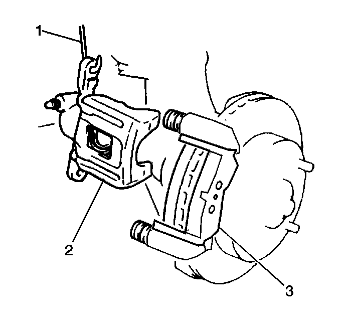
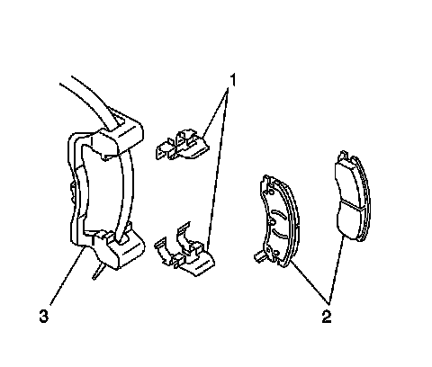
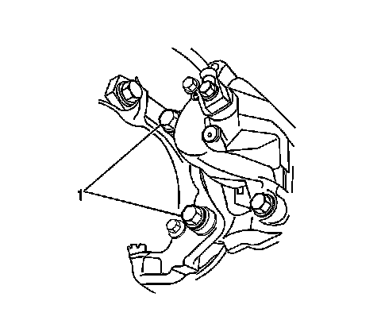

Rear Brake Caliper Bracket Replacement
Rear Brake Caliper Bracket Replacement
Caution: Refer to Brake Dust Caution (Brake Dust Caution) .
Removal Procedure

Notice: Support the brake caliper with heavy mechanic wire, or equivalent, whenever it is separated from its mount and the hydraulic flexible brake hose is still connected. Failure to support the caliper in this manner will cause the flexible brake hose to bear the weight of the caliper, which may cause damage to the brake hose and in turn may cause a brake fluid leak.
1. Remove the brake caliper (2) from the brake caliper bracket (3) and support the brake caliper (2) with heavy mechanic's wire (1), or equivalent. Do NOT disconnect the hydraulic brake flexible hose from the caliper. Refer to Rear Brake Caliper Replacement (JE5, JL9) (Rear Brake Caliper Replacement (JE5, JL9)) .

2. Remove the brake pads (2) from the brake caliper bracket (3).
3. Remove the brake pad retainers (1) from the brake caliper bracket (3).

4. Remove the brake caliper bracket bolts (1).
5. Remove the rear brake caliper bracket.
6. Inspect the brake mounting and hardware. Refer to Rear Disc Brake Hardware Replacement (JL9, JE5) (Rear Disc Brake Hardware Replacement (JL9, JE5)) .
7. Inspect the brake caliper bracket.
8. Replace the brake caliper bracket if cracked or damaged.
Installation Procedure
1. Install the brake caliper bracket.
Important: If reusing the caliper bracket bolts the threads of the caliper bracket bolts and the threads of the knuckle mounting holes must be free of residue and debris prior to application of threadlocker in order to ensure proper adhesion and fastener retention.
2. Prepare the bolts and the threaded holes for assembly:
1. Thoroughly clean the residue from the bolt threads by using denatured alcohol or equivalent and allow to dry.
2. Thoroughly clean the residue from the threaded holes by using denatured alcohol or equivalent and allow to dry.
3. Apply threadlocker GM P/N 12345493 (Canada P/N 10953488), or equivalent to 2/3 of the threaded length of the lower caliper bracket bolts. Ensure that there are no gaps in the threadlocker along the length of the filled area of the bolts.
4. Allow the threadlocker to cure approximately 10 minutes before installation.
Notice: Refer to Fastener Notice (Fastener Notice) .
3. Install the brake caliper bracket bolts (1).
Tighten the rear brake caliper bracket bolts to 120 N.m (88 lb ft).
4. Install the brake pad retainers (1) to the brake caliper bracket (3).
5. Install the brake pads (2) to the brake caliper bracket (3).
6. Install the brake caliper. Refer to Rear Brake Caliper Replacement (JE5, JL9) (Rear Brake Caliper Replacement (JE5, JL9)) .